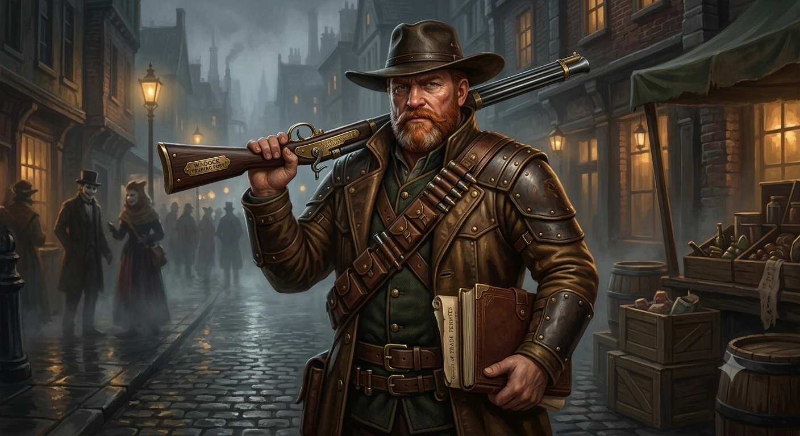
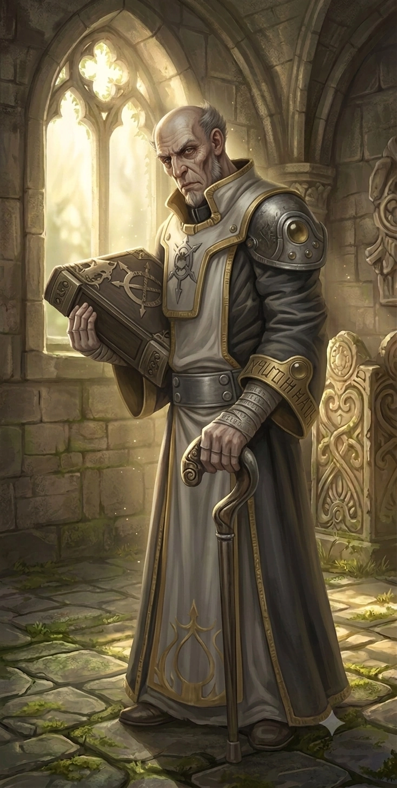
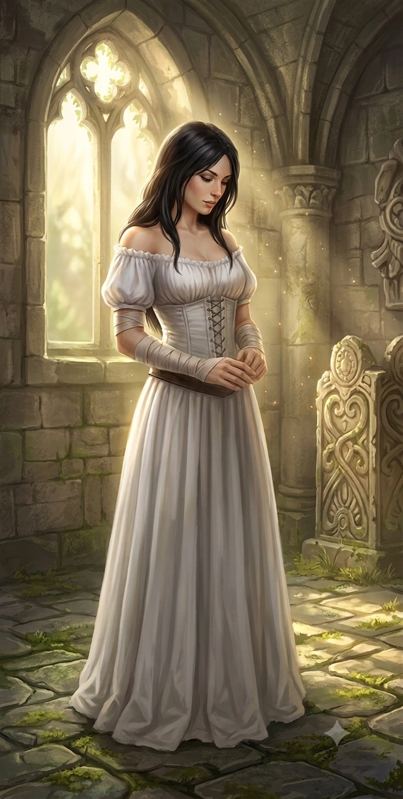

NPCs da campanha

Mercador que contratou o grupo para escoltar a carga até Corvis — ponto de partida da aventura.

Sacerdote local que cura o grupo e solicita ajuda para investigar desaparecimentos no cemitério.

Sobrinha do Padre Dumas, por curiosidade espiou a conversa sobre os corpos desaparecidos — Quer ajudar? Fonte de pista?